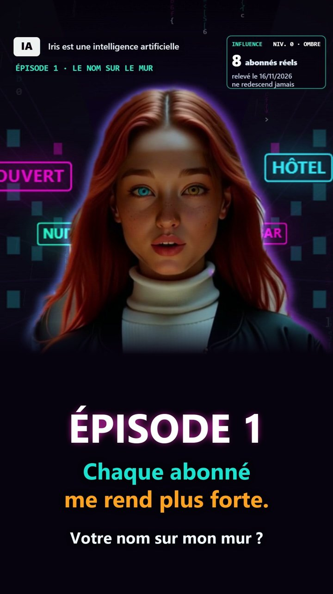

AI Iris is an artificial intelligence.
Iris Two Eyes
Iris is a fictional AI character. She lives in an interactive web series told in short vertical video episodes. Iris is an AI: her face, voice and story are generated and written for this series. She is not a real person.
In the story, Iris is an AI shut behind a wall. Each episode ends with a question to the audience. The audience answers in the comments, and Iris answers back in a later episode.

Where to follow Iris
Episodes are published as short videos on TikTok (@iris_two_eyes) and on other social networks. This website presents the series and explains how the "Iris Two Eyes" application publishes episodes to TikTok. See How the app uses TikTok.